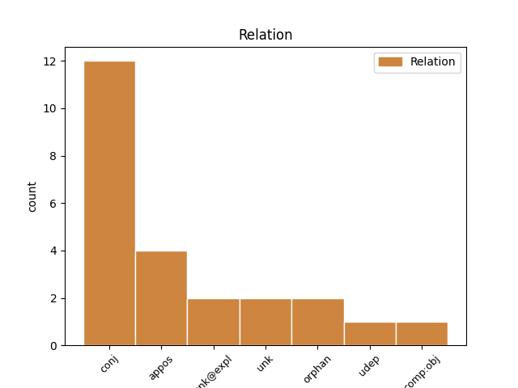
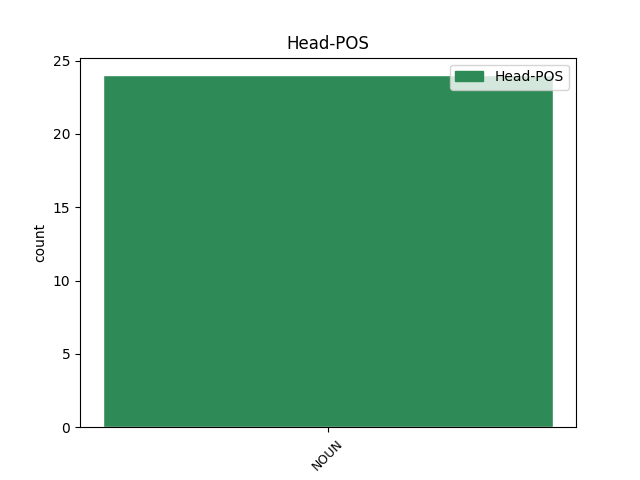
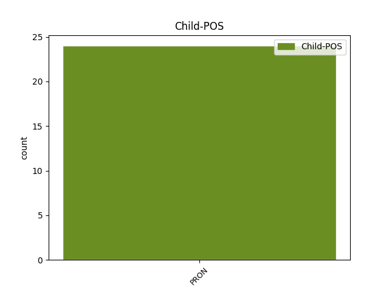

Distribution of features within this leaf



Agreement Rules sorted by frequency.
- When the dependent token is the conjunct(conj) of the head token, and the head token is NOUN and the dependent token is PRON.
1 Co _ _ _ _ 0 _ _ _
2 myslíte _ _ _ _ 0 _ _ _
3 : _ _ _ _ 0 _ _ _
4 když _ _ _ _ 0 _ _ _
5 váš _ _ _ _ 0 _ _ _
6 syn _ _ _ _ 0 _ _ _
7 dostane _ _ _ _ 0 _ _ _
8 horečku _ _ _ _ 0 _ _ _
9 , _ _ _ _ 0 _ _ _
10 mám _ _ _ _ 0 _ _ _
11 dát _ _ _ _ 0 _ _ _
12 léky _ _ _ _ 0 _ _ _
13 jeho _ _ _ _ 0 _ _ _
14 sluhům sluha NOUN NNMP3-----A---- Animacy=Anim|Case=Dat|Gender=Masc|Number=Plur|Polarity=Pos 0 _ _ _
15 , _ _ _ _ 0 _ _ _
16 a _ _ _ _ 0 _ _ _
17 ne _ _ _ _ 0 _ _ _
18 jemu on PRON PPMS3--3------- Animacy=Anim|Case=Dat|Gender=Masc|Number=Sing|Person=3|PronType=Prs 14 conj _ SpaceAfter=No
19 ? _ _ _ _ 0 _ _ _
20 " _ _ _ _ 0 _ _ _
1 je _ _ _ _ 0 _ _ _
2 to _ _ _ _ 0 _ _ _
3 jen _ _ _ _ 0 _ _ _
4 jeho _ _ _ _ 0 _ _ _
5 dívka dívka NOUN NNFS1-----A---- Case=Nom|Gender=Fem|Number=Sing|Polarity=Pos 0 _ _ _
6 , _ _ _ _ 0 _ _ _
7 ona _ _ _ _ 0 _ _ _
8 sama _ _ _ _ 0 _ _ _
9 , _ _ _ _ 0 _ _ _
10 nikdo nikdo PRON PWM-1---------- Animacy=Anim|Case=Nom|Gender=Masc|PronType=Neg 5 appos _ _
11 jiný _ _ _ _ 0 _ _ _
12 . _ _ _ _ 0 _ _ _
1 Teď _ _ _ _ 0 _ _ _
2 však _ _ _ _ 0 _ _ _
3 nezamýšlená _ _ _ _ 0 _ _ _
4 léčka _ _ _ _ 0 _ _ _
5 falešné _ _ _ _ 0 _ _ _
6 zprávy _ _ _ _ 0 _ _ _
7 rozvrátila _ _ _ _ 0 _ _ _
8 soudržnost _ _ _ _ 0 _ _ _
9 její _ _ _ _ 0 _ _ _
10 bytosti _ _ _ _ 0 _ _ _
11 a _ _ _ _ 0 _ _ _
12 Eduardovi _ _ _ _ 0 _ _ _
13 se _ _ _ _ 0 _ _ _
14 zdálo _ _ _ _ 0 _ _ _
15 , _ _ _ _ 0 _ _ _
16 že _ _ _ _ 0 _ _ _
17 její _ _ _ _ 0 _ _ _
18 názor _ _ _ _ 0 _ _ _
19 byl _ _ _ _ 0 _ _ _
20 vlastně _ _ _ _ 0 _ _ _
21 jen _ _ _ _ 0 _ _ _
22 něco _ _ _ _ 0 _ _ _
23 přilepeného _ _ _ _ 0 _ _ _
24 k _ _ _ _ 0 _ _ _
25 jejímu _ _ _ _ 0 _ _ _
26 osudu _ _ _ _ 0 _ _ _
27 , _ _ _ _ 0 _ _ _
28 a _ _ _ _ 0 _ _ _
29 její _ _ _ _ 0 _ _ _
30 osud osud NOUN NNIS1-----A---- Animacy=Inan|Case=Nom|Gender=Masc|Number=Sing|Polarity=Pos 0 _ _ _
31 jen _ _ _ _ 0 _ _ _
32 něco něco PRON PZ--1---------- Case=Nom|PronType=Ind 30 orphan _ _
33 přilepeného _ _ _ _ 0 _ _ _
34 k _ _ _ _ 0 _ _ _
35 jejímu _ _ _ _ 0 _ _ _
36 tělu _ _ _ _ 0 _ _ _
37 , _ _ _ _ 0 _ _ _
38 uviděl _ _ _ _ 0 _ _ _
39 ji _ _ _ _ 0 _ _ _
40 jako _ _ _ _ 0 _ _ _
41 nahodilé _ _ _ _ 0 _ _ _
42 spojení _ _ _ _ 0 _ _ _
43 těla _ _ _ _ 0 _ _ _
44 , _ _ _ _ 0 _ _ _
45 myšlenek _ _ _ _ 0 _ _ _
46 a _ _ _ _ 0 _ _ _
47 životního _ _ _ _ 0 _ _ _
48 běhu _ _ _ _ 0 _ _ _
49 , _ _ _ _ 0 _ _ _
50 spojení _ _ _ _ 0 _ _ _
51 neorganické _ _ _ _ 0 _ _ _
52 , _ _ _ _ 0 _ _ _
53 svévolné _ _ _ _ 0 _ _ _
54 a _ _ _ _ 0 _ _ _
55 labilní _ _ _ _ 0 _ _ _
56 . _ _ _ _ 0 _ _ _
1 Ona on PRON PPFS1--3------- Case=Nom|Gender=Fem|Number=Sing|Person=3|PronType=Prs 8 unk _ _
2 sama _ _ _ _ 0 _ _ _
3 , _ _ _ _ 0 _ _ _
4 to _ _ _ _ 0 _ _ _
5 byla _ _ _ _ 0 _ _ _
6 přece _ _ _ _ 0 _ _ _
7 především _ _ _ _ 0 _ _ _
8 žárlivost žárlivost NOUN NNFS1-----A---- Case=Nom|Gender=Fem|Number=Sing|Polarity=Pos 0 _ _ _
9 . _ _ _ _ 0 _ _ _
Disagree Examples:
1 Studenti student NOUN NNMP1-----A---- Animacy=Anim|Case=Nom|Gender=Masc|Number=Plur|Polarity=Pos 0 _ _ _
2 měli _ _ _ _ 0 _ _ _
3 žít _ _ _ _ 0 _ _ _
4 v _ _ _ _ 0 _ _ _
5 ubytovnách _ _ _ _ 0 _ _ _
6 , _ _ _ _ 0 _ _ _
7 získat _ _ _ _ 0 _ _ _
8 klasické _ _ _ _ 0 _ _ _
9 vzdělání _ _ _ _ 0 _ _ _
10 , _ _ _ _ 0 _ _ _
11 naučit _ _ _ _ 0 _ _ _
12 se se PRON P7--4---------- Case=Acc|PronType=Prs|Reflex=Yes|Variant=Short 1 unk@expl _ _
13 praktickým _ _ _ _ 0 _ _ _
14 dovednostem _ _ _ _ 0 _ _ _
15 a _ _ _ _ 0 _ _ _
16 utužit _ _ _ _ 0 _ _ _
17 si _ _ _ _ 0 _ _ _
18 tělo _ _ _ _ 0 _ _ _
19 ve _ _ _ _ 0 _ _ _
20 sportovních _ _ _ _ 0 _ _ _
21 disciplínách _ _ _ _ 0 _ _ _
22 . _ _ _ _ 0 _ _ _
1 Těšil _ _ _ _ 0 _ _ _
2 se _ _ _ _ 0 _ _ _
3 hodnou _ _ _ _ 0 _ _ _
4 chvíli _ _ _ _ 0 _ _ _
5 tímto _ _ _ _ 0 _ _ _
6 pohledem _ _ _ _ 0 _ _ _
7 , _ _ _ _ 0 _ _ _
8 až _ _ _ _ 0 _ _ _
9 konečně _ _ _ _ 0 _ _ _
10 uslyšel _ _ _ _ 0 _ _ _
11 lehké _ _ _ _ 0 _ _ _
12 kroky _ _ _ _ 0 _ _ _
13 , _ _ _ _ 0 _ _ _
14 jak _ _ _ _ 0 _ _ _
15 jdou _ _ _ _ 0 _ _ _
16 z _ _ _ _ 0 _ _ _
17 pavilónu _ _ _ _ 0 _ _ _
18 směrem směr NOUN NNIS7-----A---- Animacy=Inan|Case=Ins|Gender=Masc|Number=Sing|Polarity=Pos 0 _ _ _
19 k _ _ _ _ 0 _ _ _
20 němu on PRON P5MS3--3------- Animacy=Anim|Case=Dat|Gender=Masc|Number=Sing|Person=3|PrepCase=Pre|PronType=Prs 18 comp:obj _ SpaceAfter=No
21 . _ _ _ _ 0 _ _ _
1 Tisknu _ _ _ _ 0 _ _ _
2 k _ _ _ _ 0 _ _ _
3 sobě _ _ _ _ 0 _ _ _
4 křečovitě _ _ _ _ 0 _ _ _
5 kabelku _ _ _ _ 0 _ _ _
6 a _ _ _ _ 0 _ _ _
7 je _ _ _ _ 0 _ _ _
8 mi já PRON PH-S3--1------- Case=Dat|Number=Sing|Person=1|PronType=Prs|Variant=Short 10 udep _ _
9 příšerné _ _ _ _ 0 _ _ _
10 horko horko NOUN NNNS1-----A---- Case=Nom|Gender=Neut|Number=Sing|Polarity=Pos 0 _ _ _
11 . _ _ _ _ 0 _ _ _
1 V _ _ _ _ 0 _ _ _
2 kapse kapsa NOUN NNFS6-----A---- Case=Loc|Gender=Fem|Number=Sing|Polarity=Pos 0 _ _ _
3 nic nic PRON PW--1---------- Case=Nom|PronType=Neg 2 unk _ SpaceAfter=No
4 . _ _ _ _ 0 _ _ _
1 Ale _ _ _ _ 0 _ _ _
2 mlýnek mlýnek NOUN NNIS1-----A---- Animacy=Inan|Case=Nom|Gender=Masc|Number=Sing|Polarity=Pos 0 _ _ _
3 nic nic PRON PW--4---------- Case=Acc|PronType=Neg 2 conj _ SpaceAfter=No
4 . _ _ _ _ 0 _ _ _